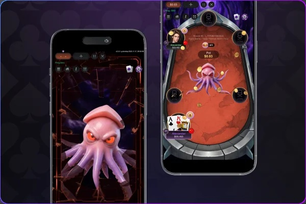
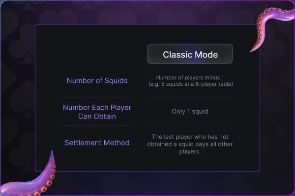
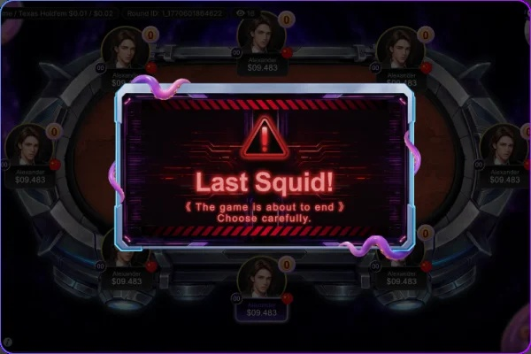
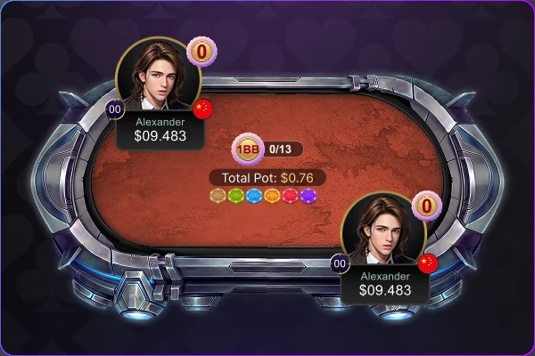

魷魚遊戲（Squid）
勝負一瞬・步步驚心
每一步抉擇都是關鍵
魷魚遊戲結合策略、心理博弈與生存競技，每一次行動都可能改變牌局走向。精準判斷局勢、把握最佳時機，在激烈對決中一路挺進，成為最後勝出的玩家。
遊戲簡介

• 開啟條件：
至少需要4名玩家才能開啟魷魚模式
• 保證金：
玩家參與魷魚遊戲時，需在入座時繳交「保證金」（固定25BB）。
「保證金」不參與遊戲，僅用於 魷魚賠償。
經典模式

• 魷魚標記數量為當桌人數減1
• 例如：6人桌有5條魷魚
• 每位玩家只能獲得1個魷魚標記
• 結算條件：
❶出現最後一個沒有魷魚的玩家時，本輪魷魚遊戲結束。
該玩家從保證金中給付給持有魷魚的玩家各5BB的魷魚罰金。
❷若有玩家失去所有籌碼且不補碼時，本輪魷魚遊戲結束。該玩家須
從保證金賠付「所有剩餘玩家」一人5BB的罰金，若同時有兩家以
上達成此條件則平分需支付的罰金。
❸未達成結算條件 ❶ 之前，任ㄧ玩家離桌。該玩家從保證金中賠付
剩餘玩家每人5BB
• 魷魚獎金 = 5BB
細節和規則

• 德州撲克使用52張牌，每手牌後都會重新洗牌。
• 斷線時，已經投入底池的籌碼有效。
• 多次發牌時，第一次獲勝的玩家獲得魷魚
• 平分底池 或 只贏得邊池，皆不發放魷魚。
• 為維持魷魚遊戲的進行與公平性，此模式下若玩家不動作
經過1分鐘倒數後將強制離桌並判賠給其餘玩家1人5BB的罰金，請玩家謹慎安排遊戲時間。
• PokerMars 玩家瞭解並接受因設備問題、伺服器連線問題、延遲、卡頓或網路問題而導致的斷線風險。
6-Player Table Squid Game Unlimited Bet Texas Hold'em Info
| Bet Level | Blind Bet | Buy-in | Rake | Rake Cap | 2~3 | 4+ | |||||
|---|---|---|---|---|---|---|---|---|---|---|---|
| Bet Level | Small | Large | Smallest | BB | Largest | BB | % | 2~3 | 4+ | BB | BB |
| Basic | $0.01 | $0.02 | $1.00 | 50 | $3.00 | 150 | 3% | $0.06 | $0.12 | 3 | 6 |
| Basic | $0.02 | $0.05 | $2.50 | 50 | $7.50 | 150 | 3% | $0.15 | $0.30 | 3 | 6 |
| Basic | $0.05 | $0.10 | $5.00 | 50 | $15.00 | 150 | 3% | $0.30 | $0.60 | 3 | 6 |
| Basic | $0.10 | $0.25 | $12.50 | 50 | $37.50 | 150 | 3% | $0.75 | $1.50 | 3 | 6 |
| Intermediate | $0.25 | $0.50 | $25.00 | 50 | $75.00 | 150 | 3% | $1.00 | $2.00 | 2 | 4 |
| Intermediate | $0.50 | $1.00 | $50.00 | 50 | $150.00 | 150 | 3% | $2.00 | $4.00 | 2 | 4 |
| Intermediate | $1.00 | $2.00 | $100.00 | 50 | $300.00 | 150 | 3% | $4.00 | $8.00 | 2 | 4 |
| Advanced | $2.00 | $5.00 | $250.00 | 50 | $750.00 | 150 | 3% | $7.50 | $15.00 | 1.5 | 3 |
| Advanced | $5.00 | $10.00 | $500.00 | 50 | $1,500.00 | 150 | 3% | $15.00 | $30.00 | 1.5 | 3 |
服務費詳情

• 翻牌前結束的牌局不收取服務費。
• 牌桌上只有三名或以下玩家時，服務費封頂減半。